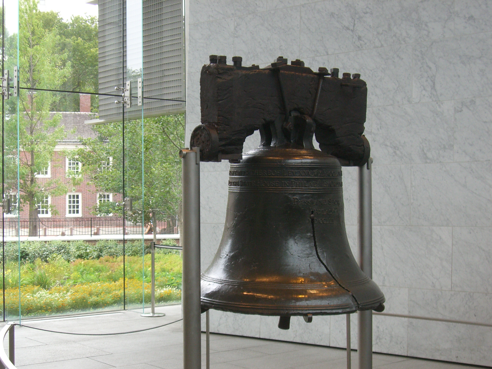
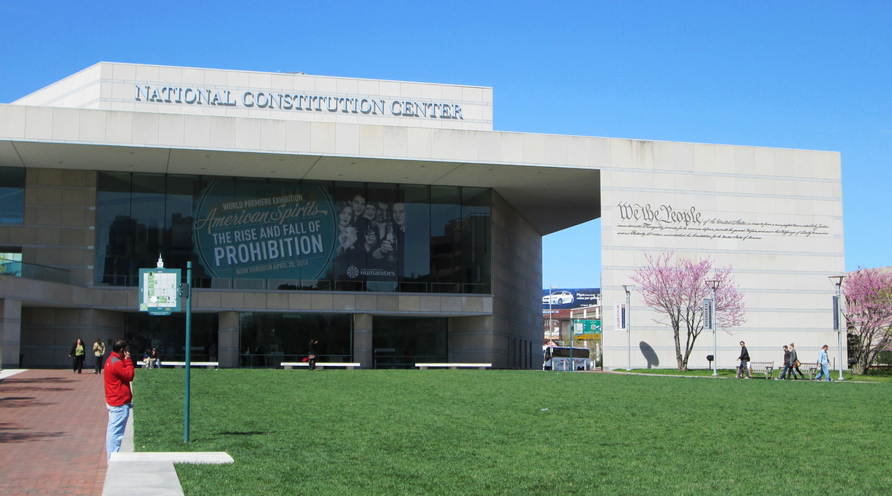
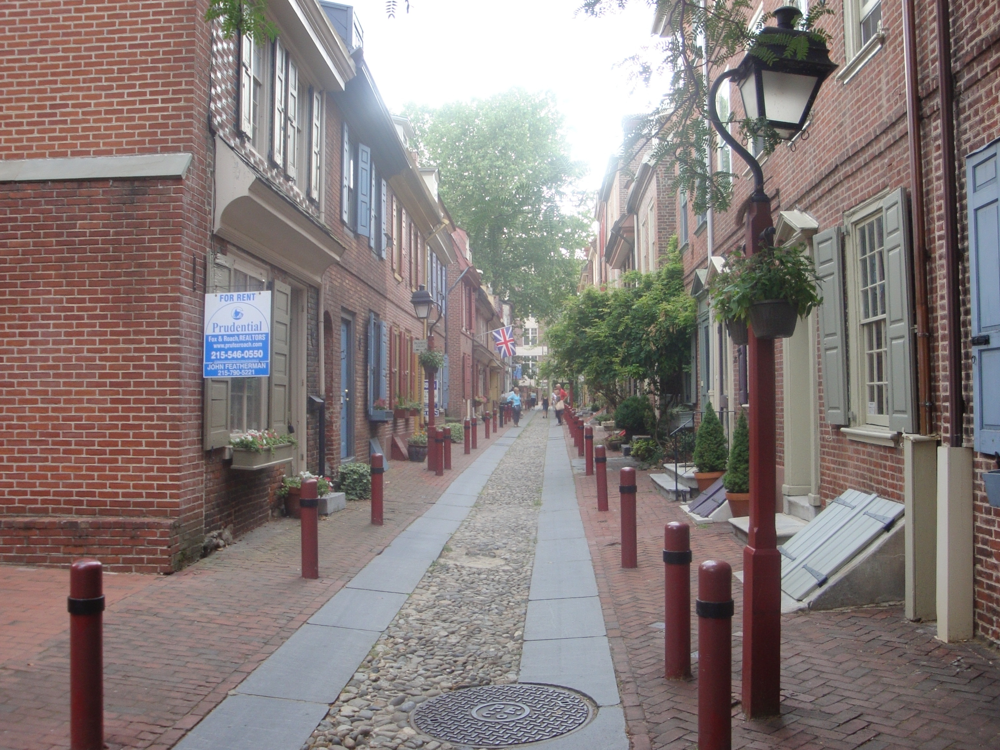
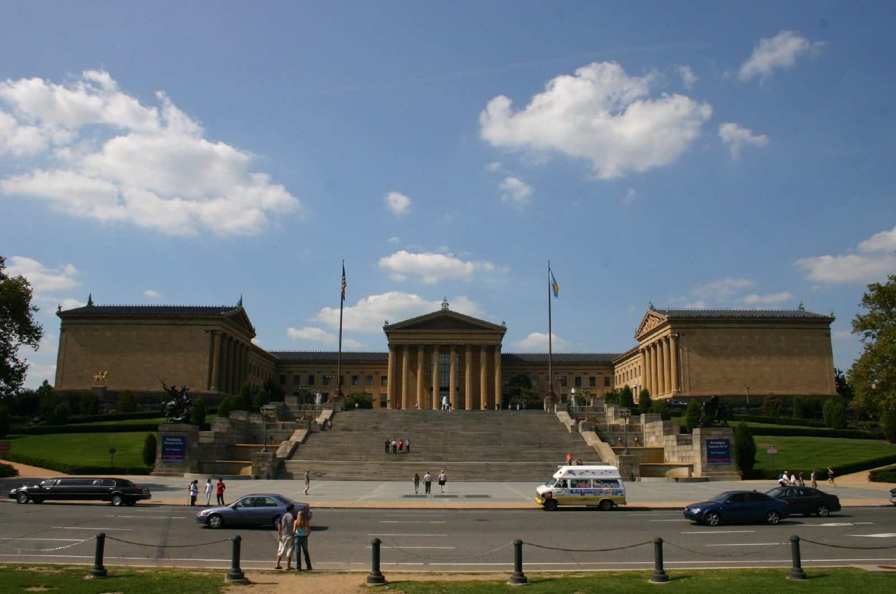
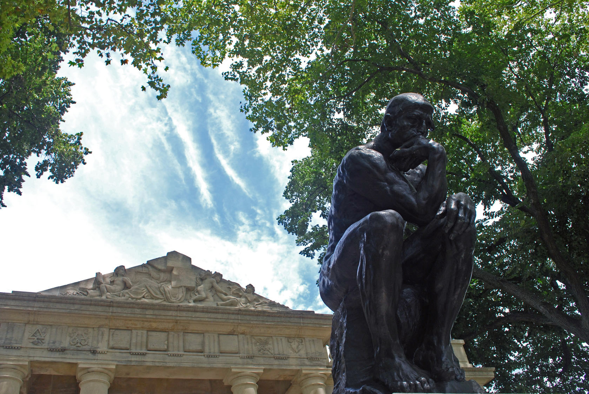
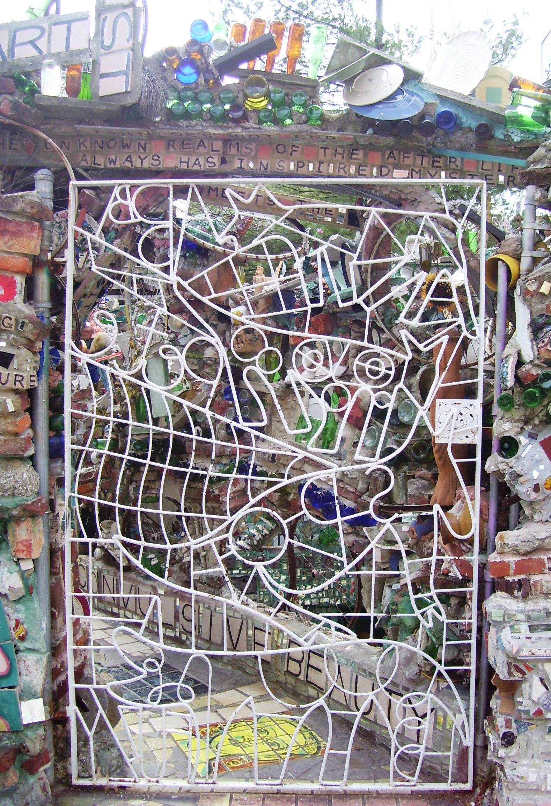

Day 1
🏨 From Hotel: 🚶 12 min · 🚕 5 min → Liberty Bell Center
Stop 1 · Liberty Bell Center

↳ The 2,080-lb bronze bell that rang in Philadelphia on July 8, 1776 for the first public reading of the Declaration of Independence. The crack and the inscription "Proclaim LIBERTY" made it a symbol of abolition and freedom worldwide.
🆓 Free entry · no tickets required · timed entry during peak season
🏛️ Daily 9:00am - 5:00pm
⏰ ~45 min
🚶 2 min · 🚕 2 min → Independence Hall
Stop 2 · Independence Hall

↳ The red-brick Georgian building where the Declaration of Independence was adopted in 1776 and the US Constitution was drafted in 1787. Guided tours run every 20 minutes through the Assembly Room where history was made.
🏛️ Daily 9:00am - 5:00pm
⏰ ~1 hr
🚶 3 min · 🚕 2 min → National Constitution Center
Stop 3 · National Constitution Center

↳ The only museum in the United States dedicated solely to the US Constitution. Features the Freedom Rising theater show, Signers' Hall with life-size bronze statues of the 39 men who signed the document, and interactive exhibits on constitutional history.
🏛️ Wed - Sun 10:00am - 5:00pm
🚫 Closed Mon & Tue
⏰ ~1.5 hr
🚶 4 min · 🚕 3 min → Elfreth's Alley
Stop 4 · Elfreth's Alley

↳ America's oldest continuously inhabited residential street, dating to 1702. The cobblestone block between N. 2nd and N. Front Streets holds 32 preserved colonial and Federal-era houses, now a National Historic Landmark. The alley is free to walk anytime; the museum in houses 124 and 126 charges a small entry fee.
🆓 Alley access free · Museum: small entry fee Fri–Sun noon–4:00pm
🏛️ Daily (alley) · Museum: Fri - Sun 12:00pm - 4:00pm
⏰ ~45 min
🚶 15 min · 🚕 7 min → hotel
Day 2
🏨 From Hotel: 🚶 28 min · 🚕 9 min → Philadelphia Museum of Art
Stop 1 · Philadelphia Museum of Art

↳ One of the largest art museums in the United States, with more than 240,000 works spanning 2,000 years — from van Gogh and Cézanne to Duchamp and Brancusi. The 72 steps out front are the "Rocky Steps" from the 1976 film. Your ticket covers two consecutive days and includes the Rodin Museum.
🏛️ Thu - Mon 10:00am - 5:00pm
🚫 Closed Tue & Wed
⏰ ~2.5 hr
🚶 7 min · 🚕 4 min → Rodin Museum
Stop 2 · Rodin Museum

↳ Holds the largest collection of Rodin's sculpture outside France, including The Thinker in the garden and The Gates of Hell indoors. Entry is pay-what-you-wish when visiting independently, and included with a Philadelphia Museum of Art ticket. The garden is free year-round.
🆓 Pay What You Wish entry · included with Philadelphia Museum of Art ticket
🏛️ Fri - Mon 10:00am - 5:00pm
🚫 Closed Tue - Thu
⏰ ~1 hr
🚶 8 min · 🚕 4 min → Barnes Foundation
Stop 3 · Barnes Foundation

↳ Albert C. Barnes assembled one of the world's finest collections of Post-Impressionist and early Modern paintings — 181 Renoirs, 69 Cézannes, 59 Matisses — displayed exactly as he arranged them, floor-to-ceiling alongside ironwork and furniture. Advance booking strongly recommended.
🏛️ Thu - Mon 11:00am - 5:00pm
🚫 Closed Tue & Wed
⏰ ~1.5 hr
🚕 12 min → Mütter Museum
Stop 4 · Mütter Museum

↳ A medical history museum at the College of Physicians of Philadelphia, displaying 37,000 anatomical and pathological specimens — including the Hyrtl Skull Collection of 139 skulls, a 7.5-foot colon, and the preserved liver shared by the conjoined twins Chang and Eng. Not for the squeamish; genuinely extraordinary.
🏛️ Wed - Mon 10:00am - 5:00pm
🚫 Closed Tue
⏰ ~1.5 hr
🚶 20 min · 🚕 8 min → hotel
Day 3
🏨 From Hotel: 🚶 28 min · 🚕 10 min → Eastern State Penitentiary
Stop 1 · Eastern State Penitentiary
↳ A now-ruined Gothic castle of a prison built in 1829, once the most expensive building in the United States. Al Capone did time here. The Steve Buscemi-narrated audio tour leads visitors through cellblocks, solitary confinement cells, and art installations set against crumbling stone walls.
🏛️ Daily 10:00am - 5:00pm
⏰ ~2 hr
🚕 14 min → Philadelphia's Magic Gardens
Stop 2 · Philadelphia's Magic Gardens

↳ Artist Isaiah Zagar spent 14 years covering a vacant lot and adjacent buildings on South Street in mosaics of shattered glass, mirror, tile, bicycle wheels, and folk art. The result is a labyrinthine outdoor and indoor gallery that is entirely unlike anything else in the city. Book tickets in advance — it sells out.
🏛️ Wed - Mon 11:00am - 6:00pm
🚫 Closed Tue
⏰ ~1 hr
🚕 12 min → Penn Museum
Stop 3 · Penn Museum
↳ The University of Pennsylvania Museum of Archaeology and Anthropology holds one of the world's greatest collections of human history — 1 million objects from Egypt, Mesopotamia, the Americas, and Asia. Highlights include the Great Crystal Ball and objects from the Royal Cemetery of Ur.
🏛️ Tue - Sun 10:00am - 5:00pm
🚫 Closed Mon
⏰ ~2 hr
🚶 44 min · 🚕 15 min → hotel
Philadelphia is the only city in the world where you can stand between the room where the Declaration of Independence was signed, the room where the Constitution was drafted, and the bell that rang to announce both — all within a three-minute walk of each other. Most cities have one founding moment. Philadelphia has the entire founding era compressed into a single square mile.
What struck me during research is how the Barnes Foundation mirrors this compression. Albert C. Barnes, a doctor who made his fortune selling an antiseptic, spent decades assembling 181 Renoirs and 69 Cézannes and then refused to loan a single work or allow photographs. His arrangement of pictures — floor-to-ceiling, grouped by compositional principle rather than chronology — was so deliberately idiosyncratic that the courts spent years after his death debating whether anyone could legally move the collection. The collection is now in its third building. The arrangement inside has not changed by one inch.